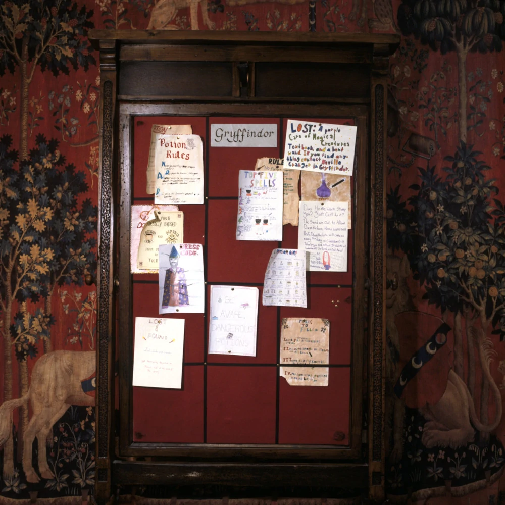
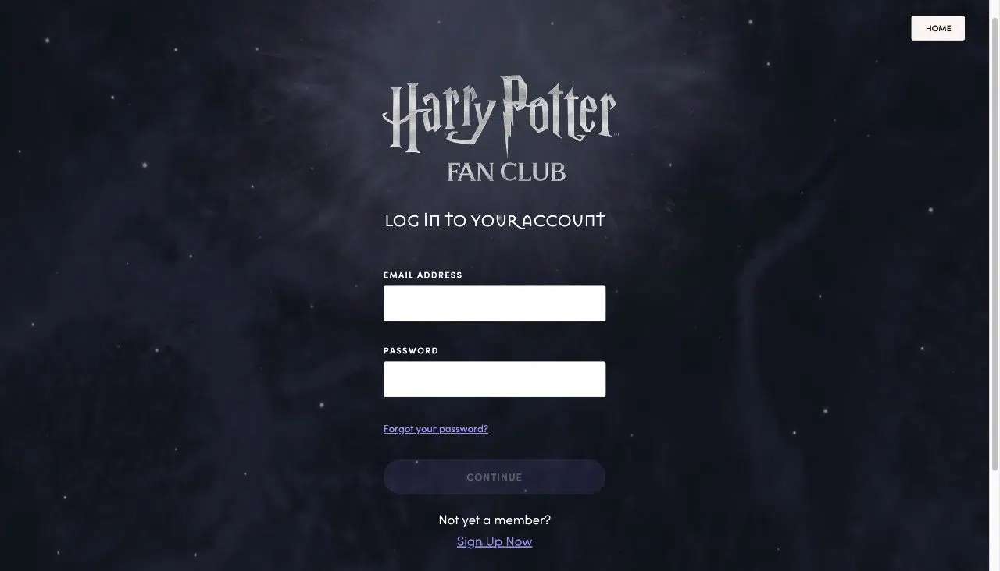

Meios de contato
Em Hogwarts, a comunicação entre alunos e professores se dá por meios tradicionais e digitais. Aqui estão algumas formas de contato e recursos disponíveis:
Cartas e correios
Desse modo, os alunos e professores podem se comunicar via cartas. No entanto, fazendo uso dos correios tradicionais. Cada aluno tem uma caixa de correio pessoal nas dependências da escola, onde recebem mensagens e tarefas.
Quadro de avisos
Haveria um quadro de avisos físico onde os professores postam lembretes sobre tarefas, prazos e eventos importantes, como debates literários ou concursos de redação.
E-mail e Plataforma online de ensino
Em Hogwarts, a escola também tem uma plataforma digital onde os professores podem postar materiais de leitura, exercícios de gramática e vídeos explicativos. Alunos e professores podem se comunicar via e-mail ou fórum acadêmico, discutindo temas de aula, enviando dúvidas e participando de grupos de estudo online.
Biblioteca e Recursos digitais
A Biblioteca de Hogwarts tende a ser um espaço fundamental para o aprendizado, oferecendo uma vasta coleção de livros, enciclopédias e textos clássicos. A biblioteca também tem acesso a bases de dados digitais e recursos online, permitindo que os alunos pesquisem artigos acadêmicos e assistam a palestras virtuais.